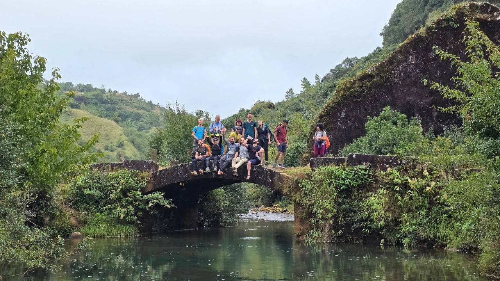
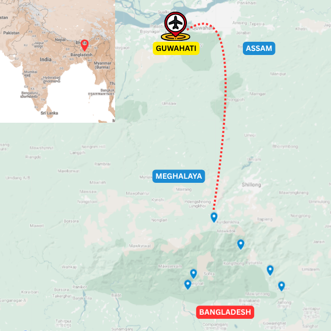

Overview
Walk through Meghalaya’s forests, villages and living root bridges
This walking tour in Meghalaya moves at the right pace: slow enough for forest trails, village conversations, waterfalls, living root bridges and the small details that are easy to miss from the road. For more routes in the same state, visit our Meghalaya tours page.
The route is shaped around comfortable day walks rather than a hard trekking expedition, with time for Khasi villages, local food, markets, viewpoints and the deep green landscapes that make Meghalaya so atmospheric. Travellers who want a scheduled small-group version can also look at the Walkers Tour of Meghalaya fixed departure.
It works well for travellers who want active days, cultural depth and a softer way into the hills. If you are still comparing trip style or season, see our walking holidays in Northeast India guide and the best time to visit Northeast India.
Walk Details
Route character

Journey Flow
The tour in sections
This is an indicative flow. The final route is shaped around your dates, pace, group profile and local conditions.
Village walks and waterfall country
Spend the next section on village paths, forest trails and waterfall routes, moving through places where daily life, farming, food and landscape sit close together.
Living root bridge country
Walk into Meghalaya's living root bridge landscapes, with forest descents, stone steps, clear streams and time in communities shaped by the monsoon and the forest.
Highland viewpoints and local life
Return to the plateau for ridgelines, open views, markets and gentler walks that round out the picture of Meghalaya beyond its headline sights.
Detailed itinerary
Ask for the full route plan and cost
The itineraries are unique, so the detailed route and cost are shared directly after understanding your dates, pace and group size. If you want to combine walks with cycling, caving or village-based activity, explore our multi-activity tour of Meghalaya, or browse more Meghalaya tours.
Photo Gallery
Moments from Walks in the Clouds
Enquire
Plan Walkers Tour of Meghalaya
Share a few details and we will get back to you with the best route, duration and cost options.